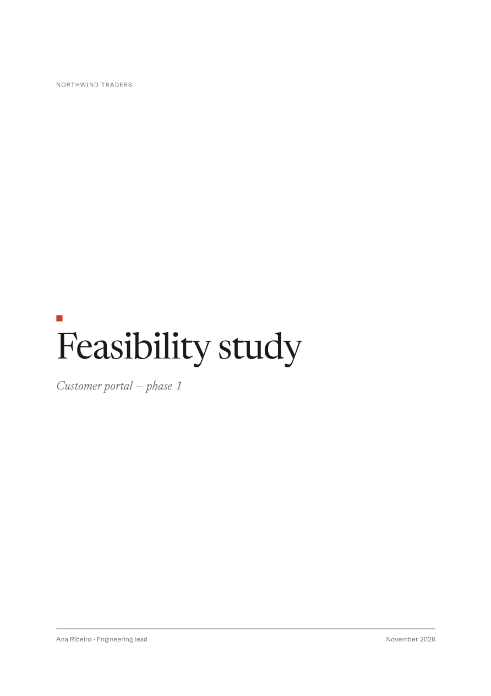
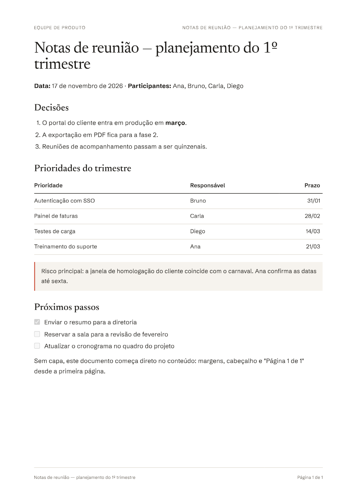
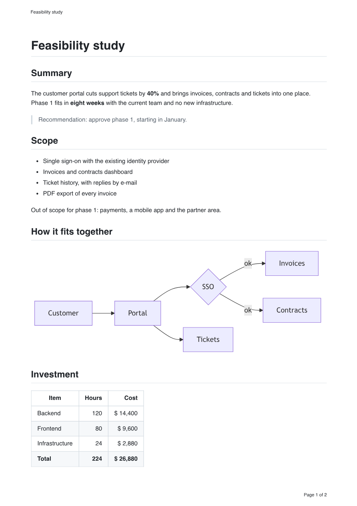
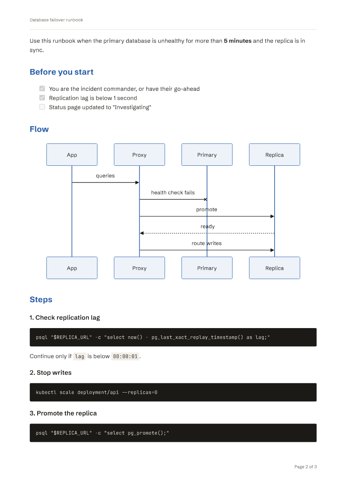

report
O padrão. Títulos serifados editoriais sobre uma grotesca limpa, para propostas, estudos de viabilidade e relatórios de consultoria.
Abrir o PDF →

Relatórios, documentação e propostas com capa, cabeçalho e “Página 2 de 4”, sem escrever uma linha de CSS. Escolha um tema e entregue.
$ npx prelum relatorio.md
À esquerda, um relatório em Markdown impresso com a folha de estilo do GitHub. À direita, o mesmo arquivo pelo tema report do prelum.


Uma linha no frontmatter troca o visual inteiro. Você nunca mexe numa folha de estilo.
Capa, cabeçalho e rodapé, “Página 2 de 4”, e tabelas que quebram entre páginas repetindo o cabeçalho.
Diagramas nas cores do tema. Fontes e Mermaid vêm no pacote: nada sai da sua máquina.
Fontes embutidas em todo lugar. Com SOURCE_DATE_EPOCH, o mesmo arquivo gera os mesmos bytes.
Defina theme: no frontmatter, ou passe --theme. Todas as páginas abaixo são saída real.
reportO padrão. Títulos serifados editoriais sobre uma grotesca limpa, para propostas, estudos de viabilidade e relatórios de consultoria.
Abrir o PDF →

technicalTudo em sem serifa, acento azul e blocos de código escuros, para documentação, relatórios de implementação e runbooks.
Abrir o PDF →

Sem etapa de instalação: o npx busca o prelum na primeira vez.
$ npx prelum relatorio.md
prelum■ 0.1.0
✓ markdown 157 palavras
✓ mermaid 1 diagrama
✓ tema report
✓ paginação capa, 3 páginas
■ relatorio.pdf pronto em 0,9 snpx playwright install chromium.O prelum é uma ferramenta pequena, feita às claras. Issues, ideias e temas são bem-vindos no GitHub.
github.com/prelum/prelum